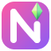

Novulon Buy me a coffeeFree Windows apps for people who play The Sims 4 with a lot of mods. One gets the game loading faster and keeps your CC tidy. The other lets you make WickedWhims animations without Blender.
Want to look at the project? Both apps are open source. You can see how they're made on GitHub.
View on GitHub